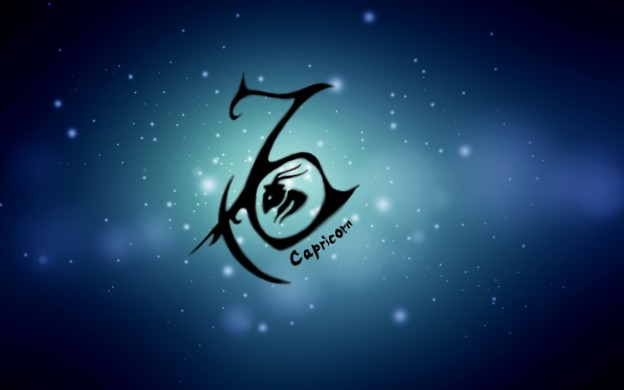

|  |
Get ready as the world will be your oyster, as per Capricorn 2019 horoscope! You will come off with flying colors as you will witness a positive
transformation in both,
personal and professional life, a whole nine yards, during this phase. The tenth sign of the Zodiac, the Earthy Capricorn, represents that you are an ambitious, determined and helpful person.
It is truly said
that, it is better to stock up before the winter comes. As you are also a reliable, practical and hardworking person, it is a perfect time to think about your future. And
remember that,
action speaks better than words. Try to improve yourself, think more rationally and make realistic plans, and keep the eye on the ball, always! For now, keep the worry about
your financial
investments and savings at bay as there will be better than average results. |
Especially in the matters related to money, it is better to be safe than sorry, so check everything before making any kind of investment. Always remember that
there is no such thing as free lunch.
As we know, nothing interesting is ever one-sided. It seems that you are very lucky and fortunate for the most of part of the year. If you have any of your
long-term plans waiting, or thinking to
initiate something new then hold on that thought for a while because Saturn and Uranus will meet in a harmonious setting, in the second half of the year which
is likely to give wonderful results in
August and September. Sky is the limit and there are chances for you to achieve new heights and set remarkable standards, so says your Capricorn horoscope
2019. |